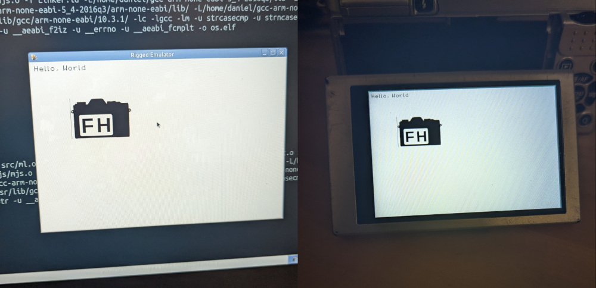

Frontier is an experimental operating system designed to run on consumer electronics and in bare metal environments.
Read more about the project on GithubBasic grapical menu demonstrating the UI library.
Frontier compatible code being run on a modded camera and an emulator.
Copyright (C) Frontier by Clutchlink.